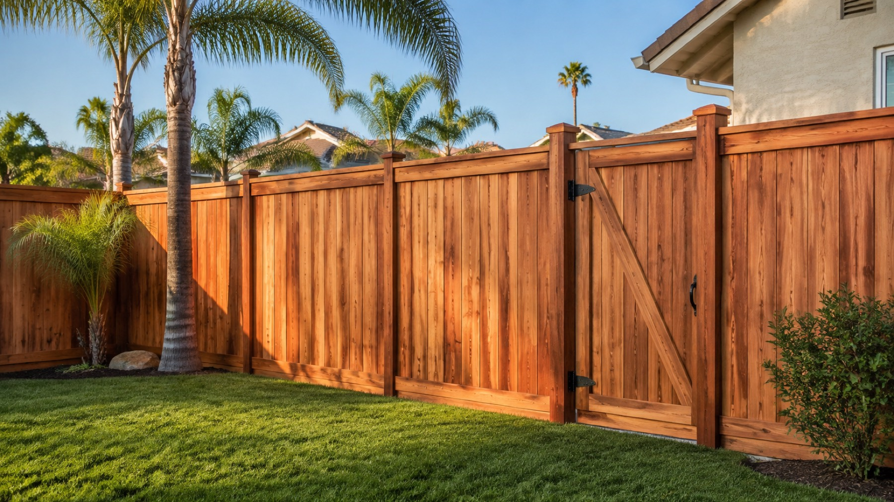

Family owned in Escondido since 1955
Chain link, wood, vinyl, aluminum and custom iron fences and gates for North San Diego County, installed by our own trained crews, never subcontractors. Free estimates and fair pricing.
All fencing is installed by our own trained employees, not by subcontractors, backed by seven decades of good reputation in the fence business.
Our iron shop is on site. Bring a picture, a sketch or a page from our portfolio and we can fabricate custom gates, railings and repairs, from a garden gate to a 28-foot slider.
We carry nearly all your do-it-yourself fencing needs and sell to contractors and homeowners alike, with detailed quotes and installation tips at the front counter.
Fence types
From ranch post-and-rail to automated entry gates, we install a full range of styles and materials, and we only install quality, time-tested brands.
Galvanized or vinyl-coated colors, plus PrivacyLink with pre-inserted slats. From pet containment to school safety, a budget-friendly solution.
Traditional ranch post-and-rail to elegant privacy styles, painted or stained. We have installed wood fences since we began in 1955.
Picket and ranch rail in white or darker wood-look colors. Maintenance-free, quality time-tested brands only.
Alumi-Guard and Ameristar Echelon Plus: a no-rust alternative to traditional wrought iron, in numerous colors and styles.
Custom fabricated in our on-site iron shop, or ready-made pre-galvanized, powder-coated panels.
Keep critters in or out, on an existing fence or from scratch.
Automated entry gates for convenience and security. We install LiftMaster operators and sell gate remotes at the counter.
Ranch-style barrier and corral gates. See our portfolio for recent installations.
As simple or ornate as you would like: handrails and patio enclosures to complement your home or business.
Pet enclosures, commercial dumpster enclosures, a vinyl archway over your garden gate, and more.
Repairs to fences, gates and gate operators, including wind and impact damage.
Free estimates on every project. CA Contractors License #222767, classes C-10 and C-13, bonded and insured.
A family business
Frontier Fence Company is a family-owned-and-operated business in Escondido, California. Founded in 1955 by Tom Miller, it is run today by Tom's sons Curt, Mark, Tommy and Jim Miller from the same yard on West Mission Road, one mile east of Nordahl at the corner of Andreasen.
All fencing is installed by our own trained employees, not by subcontractors, and our iron shop is right on site. You can be assured of 100% satisfaction, backed by seven decades of good reputation in the fence business.
We serve North San Diego County coastal and inland areas including Bonsall, Carlsbad, Carmel Valley, Del Mar, Encinitas, Escondido, Fallbrook, Leucadia, Oceanside, Pauma Valley, Rancho Bernardo, Rancho Peñasquitos, Rancho Santa Fe, San Marcos, Solana Beach, Valley Center and Vista.
Retail showroom
We carry nearly all your do-it-yourself fencing needs and sell to contractors and homeowners alike. Our staff can answer questions on components, installation and repairs, put together a detailed quote, and special-order what we do not stock.
Reviews
“Tommy guided us through every step of the process, providing expert assistance and outstanding customer service. After getting several quotes, we found that Tommy's numbers were accurate and fair, without sacrificing quality or support.”
“This is what every small business aspires to be: have excellent customer service and very good prices. I bought 15 iron fence panels and installed them myself. They took the time to listen. John was super helpful.”
“It looked brand new. I would give them more stars if they allowed it. Great job, very reasonable pricing, and a topnotch team. Don't hesitate to call Frontier Fence.”
“I had black chainlink fencing, Aristrocrat wrought iron fencing and a custom wrought iron gate installed. The gate was custom made and is gorgeous. The installers were professional, perfectionists and kind.”
Hours & location
| Monday | 7:00 am – 4:30 pm |
|---|---|
| Tuesday | 7:00 am – 4:30 pm |
| Wednesday | 7:00 am – 4:30 pm |
| Thursday | 7:00 am – 4:30 pm |
| Friday | 7:00 am – 4:30 pm |
| Saturday | Closed |
| Sunday | Closed |
One mile east of Nordahl at the corner of Andreasen. Toll-free 1-888-745-5609 · Fax (760) 745-3085.
Frontier Fence Company
1314 West Mission Road, Escondido, CA 92029
Call (760) 745-5609 or toll-free 1-888-745-5609, email frontierfencecoinc@sbcglobal.net, or stop by the showroom at 1314 W Mission Road.
Call (760) 745-5609